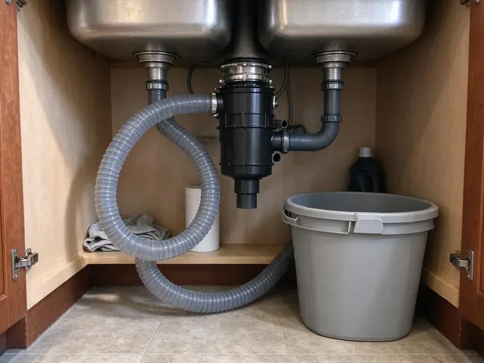

Garbage Disposal Repair in Valdosta, GA
A dead disposal in Valdosta, GA is often a bad switch or a tripped overload, not a dead motor. HGR Plumbing checks the cheap fixes first.
- Leak Checked Before We Go
- Flat Price Up Front
- All Major Brands
- Warrantied Labor

Disposal Humming or Leaking in Valdosta, GA?
We try the simple fixes first, so you do not pay for a new unit you do not need.
Same-Day Garbage Disposal Repair in Valdosta, GA
HGR Plumbing knows a dead disposal stops the whole sink in a Valdosta kitchen. Water sits in the bowl. We work through it in order, checking the breaker, the wall switch, the reset button and then the motor, because the cheap causes are far more common than a burned out motor.
Some of what we do:
- Sealing flange, inlet and tube leaks
- Freeing jammed flywheels
- Clearing stuck impeller lugs

Additional Kitchen Plumbing Services in Valdosta, GA
Our kitchen plumbing services in Valdosta, GA cover sinks, disposals, dishwashers, and grease traps so your kitchen keeps running without backups or leaks.


Customers
Why Choose HGR Plumbing for Garbage Disposal Repair in Valdosta, GA?
Plumbing systems in Georgia vary from old galvanized to new PVC, and the pipe changes how we fix the disposal. Old pipe can be the real problem. In homes with galvanized drains a slow disposal often points to a narrowed branch line, and we check it before faulting the unit.
- Brand Knowledge, We repair InSinkErator, Waste King, Moen, GE and more.
- Clear Pricing, You get a flat quote before any work begins, with no add-ons later.
- Experienced Plumbers, Our techs have repaired thousands of units and know where each brand fails.
Citywide Coverage
Every neighborhood in Valdosta is covered for disposal repair, from new subdivisions to older homes close in. We are usually close by. Short drives mean quick visits, so a jammed disposal does not sit full of dirty water overnight.
Experienced Team
Our plumbers have repaired disposals of every age and brand. They know a failing bearing by sound. Each sound, from a rough hum to a high whine or a startup clunk, points to a different part, and knowing them cuts diagnosis time.
Safety-First Approach
We always cut power at the switch or breaker before working inside a disposal. No hands in the chamber, ever. We use the hex key and long pliers to free jams, because the impellers and grind ring are sharp enough to cut and the motor can restart if the reset pops back in.
Trusted Certified Valdosta Plumbing Services Professionals
At HGR Plumbing, we take pride in licensed, certified plumbing services throughout Valdosta, GA. Credentials matter in this trade. Every repair, install and maintenance visit follows strict safety and quality rules, and the plumbers doing the work carry recognized industry credentials.
Call Us Now PHCC Plumbing Contractor Recognition
PHCC Plumbing Contractor Recognition Better Business Bureau (BBB) Accreditation
Better Business Bureau (BBB) Accreditation Angi Certified Pro
Angi Certified Pro ISO 9001 Quality Management Certification
ISO 9001 Quality Management CertificationDisposal Repair in Valdosta, GA: The Details
Noisy Disposal Repair in Valdosta
Grinding, rattling or a hum that sounds rough usually mean trouble inside the unit. A loose mount will rattle. We check the mount first, then the chamber for debris, then listen to the motor with the chamber empty, because a motor that whines with nothing in it has bad bearings.

Slow Draining Disposal Repair in Valdosta, GA
Good grinding but slow draining usually means the discharge tube or the trap arm is packed. Coffee grounds and rice cause most of it. We pull the trap, clear the tube and the arm with the right size cable, and check that the arm has at least a quarter inch of fall per foot toward the wall.
InSinkErator and Other Brand Repairs in Valdosta, GA
InSinkErator, Waste King and Moen each use different mounts, so a flange leak is fixed with that brand's kit. InSinkErator uses a three-bolt or Quick Lock style ring, while Waste King uses an EZ Mount twist ring that comes off without tools. Common kits ride on our trucks. That keeps most repairs to one visit.
Preventive Care and Longevity in Valdosta, GA
Keep cold water running before, during and after use, and let it go about 15 seconds after the motor stops so the food clears the trap. Grease poured in with hot water coats the chamber and the pipe, while cold water keeps it solid so the impellers can break it up. Fibrous scraps jam it most. Throw out celery, corn husks and artichoke leaves.
Electrical Issues and Motor Repair in Valdosta
A disposal that hums but will not grind has power but cannot turn, while one that is silent has no power at all. The two need different fixes. We check the breaker, the reset button and the switch for silent units, and the flywheel and motor windings for humming ones, then decide if a repair makes sense.
Leaking Disposal Fix in Valdosta, GA
When the drip starts at the top, the putty under the sink flange is usually dried out. We drop the unit, pull the flange, clean off the old putty and reset it with fresh putty and new gaskets, then hang the disposal back up. Most top leaks stop there. Side leaks are usually the discharge gasket or the dishwasher hose clamp.
Emergency Disposal Repair in Valdosta, GA
Water on the floor beats every other problem. Turn the disposal off, stop the dishwasher if it is running, and close the angle stops under the sink so the faucet cannot add more water to a backed up bowl. Then call us. Most times we stop the leak that day and either fix the disposal or price a new one on the spot.

Disposal Odor and Buildup Cleaning in Valdosta, GA
Food buildup and grease on the chamber walls and under the splash guard cause most disposal smells. Homes farther south often draw from deep limestone aquifers, so more mineral-heavy water and the occasional sulfur smell are common complaints there. Scale gives that food something to stick to. Cleaning the guard and chamber, checking the drain and swapping a torn guard often solves a smell that lemon peels never fixed.
Local Disposal Repair in Valdosta, GA
Distant companies take days to schedule. Our local plumbers know the housing and drain types common in Valdosta, so they show up with the right adapters and know what to expect behind the cabinet wall.
Local water affects disposals. Scale from hard water collects on the grinding ring and chamber, and knowing that lets us tell a unit problem from a buildup problem. You get a fix that lasts.
HGR Plumbing at a Glance
- Licensed and insured plumbers serving Valdosta, GA
- 24/7 emergency service with same-day scheduling
- Clear written estimates, no hidden fees
- 4.9-star rated by 357+ Georgia customers
Valdosta Map
Valdosta Information
- Population
- 55,025
- Area codes
- 229/478/912
- Service area
- Valdosta and communities within 40 miles
- Nearby
- Albany, Brunswick, Warner Robins, Macon
Disposals in Valdosta, GA last eight to twelve years with decent care, and a fast repair can add a few more. Homes farther south often draw from deep limestone aquifers, so harder water and the occasional sulfur smell are common complaints there.
Talk to a Plumber
Reach out to HGR Plumbing for reliable plumbing work done by licensed pros in Valdosta, GA.
Our Specialized Plumbing Services in Valdosta, GA
At HGR Plumbing, you get every kind of plumbing service from one company across Valdosta, GA. We go from leak detection all the way to full system installations, for homes and commercial buildings, and we do it quickly at a fair price. Explore our core services below:


How a Disposal Repair Visit Works in Valdosta, GA
Here is how we get your disposal working again.
Call Us
Call (770) 470-3778 and describe what your disposal is doing. We schedule a time, usually the same day.
Diagnose the Issue
Your plumber checks for jams, leaks, electrical faults and drain clogs. You get a flat price before we start.
Repair and Test
We fix the problem and run the disposal with water. We check for leaks and clean up before we go.
Frequently Asked Questions About Garbage Disposal Repair in Valdosta
It depends on what failed. Clearing a jam usually runs $100 to $200, while a flange reseal, switch replacement or electrical repair tends to land between $250 and $500. We quote before starting.
The most common are InSinkErator, Waste King, Moen, KitchenAid and GE. We carry their flange kits, gaskets and switches, and we can source parts for most other makers within a day or two.
Bottom leaks usually come from a failed internal seal. That part generally cannot be repaired, so the unit needs replacing.
Some fixes are safe for homeowners. With the power off, you can press the red reset button on the bottom and turn the flywheel with a 1/4 inch hex key in the socket underneath, which clears most jams. Call us for leaks or wiring.
Most repairs take one to two hours. Jams and resets often take under 30 minutes, while a flange reseal means dropping the unit, cleaning the old putty and setting the flange again, which takes longer.
InSinkErator, Waste King, Moen, KitchenAid, Frigidaire and most others. Parts vary by brand. Most brands use their own mounts and flanges, so we carry the common kits and order others, usually within a couple of days.
Stringy foods like celery, potato peels and corn husks tangle in the impellers, and pits or bones wedge against the grind ring. Poor drain slope can add to it. If the trap arm does not fall toward the wall, ground food settles in it and backs up into the chamber, which feels like a jam even when the unit is fine.
Grind with cold water running, and run the unit every few days even if there is little in it, which keeps the impellers moving and helps prevent rust. Add food a little at a time rather than stuffing the chamber, and skip grease, coffee grounds and stringy scraps. Citrus peels help the smell.
Hear From Customers Who Hired Our Plumbing Experts

Diane F.
My kitchen faucet had dripped for months and I finally got tired of hearing it at night. HGR Plumbing came out the next morning, replaced the cartridge and the O rings, and tightened a loose base that was letting water under the sink.
Faucet Repair · Albany, GA
Carlos V.
Our house still had galvanized pipe, and upstairs the shower was a trickle. The crew repiped everything in PEX over three days and patched every drywall hole before they left. The pressure difference is night and day.
Repiping · Albany, GA
Sofia M.
Two new toilets went in during one visit. The tech set them on new wax rings and swapped the old supply lines. He also noticed our bathroom faucet dripping and replaced the cartridge while he was there. No mess left behind.
Toilet Installation · Warner Robins, GA
Robert G.
The camera showed a full break in our clay sewer line near the street. HGR Plumbing replaced it with a trenchless pipe burst, so the only digging was two small pits in the yard. They let us watch the footage before and after.
Sewer Line Replacement · Warner Robins, GA
Mark T.
The floor drain in our office break room backed up every few weeks. The plumber ran a cable, then put a camera down and found roots at a joint about thirty feet out. Seeing it on the screen made the decision easy.
Drain Cleaning · Valdosta, GA
Megan L.
Our upstairs tub drained so slowly that every shower turned into a bath. HGR Plumbing pulled a wad of hair out of the stopper and then snaked the line past the trap. Three months later it still drains fast.
Drain Cleaning · Savannah, GA